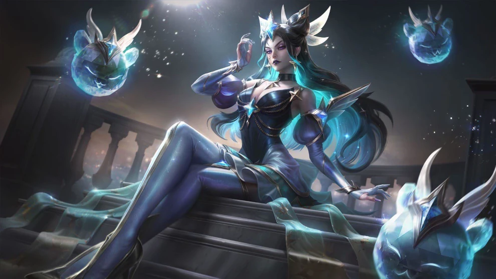

Syndra é uma maga focada em seu late game, onde ela encontra seu pico de poder após coletar seus stacks da sua passiva; com forte potencial de estourar seus inimigos em seu late game, syndra tambeem pode servir como uma maga de controle usando suas habilidades EQ, ela pode ser muito fragil no começo de jogo, portando é importante tomar atitudes com cuidado.
Syndra foi uam menina muito maltratada em toda sua infancia, enganada por seu mestre e abandonada por sua familia; apesar de tudo ela tinha uma grande habilidade de sugar a magia espiritual ao seu redor oque misturado a sua raiva a tornava alguem muito perigosa, portanto o proprio espirito de ionia usou seu poder para adormecela para q ela nao fosse uma ameaça aos ionianos... muito tempo se passou até que syndra foi acordada e em um surto de furia se exilou em seu "castelo" voador.
